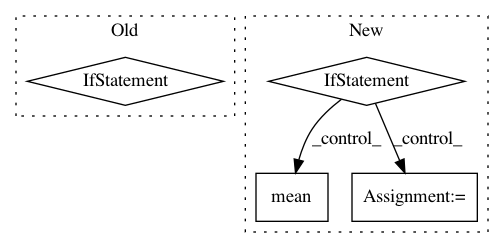

34bae27ac7d3c39335a2b8c7d4cd4efba56aa398,rllib/execution/replay_buffer.py,LocalReplayBuffer,add_batch,#LocalReplayBuffer#Any#,348
Before Change
After Change
if isinstance(batch, SampleBatch):
batch = MultiAgentBatch({DEFAULT_POLICY_ID: batch}, batch.count)
with self.add_batch_timer:
if self.replay_mode == "lockstep":
// Note that prioritization is not supported in this mode.
for s in batch.timeslices(self.replay_sequence_length):
self.replay_buffers[_ALL_POLICIES].add(s, weight=None)
else:
for policy_id, b in batch.policy_batches.items():
for s in b.timeslices(self.replay_sequence_length):
if "weights" in s:
weight = np.mean(s["weights"])
else:
weight = None
self.replay_buffers[policy_id].add(s, weight=weight)
self.num_added += batch.count
def replay(self):
if self._fake_batch:
In pattern: SUPERPATTERN
Frequency: 3
Non-data size: 4
Instances
Project Name: ray-project/ray
Commit Name: 34bae27ac7d3c39335a2b8c7d4cd4efba56aa398
Time: 2020-06-12
Author: ekhliang@gmail.com
File Name: rllib/execution/replay_buffer.py
Class Name: LocalReplayBuffer
Method Name: add_batch
Project Name: ray-project/ray
Commit Name: 244aafdcf89ae814975c8c4e3faf0bd4995c7878
Time: 2020-09-05
Author: sven@anyscale.io
File Name: rllib/utils/exploration/tests/test_curiosity.py
Class Name: OneHotWrapper
Method Name: observation
Project Name: OpenNMT/OpenNMT-py
Commit Name: 0e7bfac76b97e7630102687f7e6309e00e190091
Time: 2018-11-13
Author: benzurdopeters@gmail.com
File Name: onmt/decoders/ensemble.py
Class Name: EnsembleGenerator
Method Name: forward